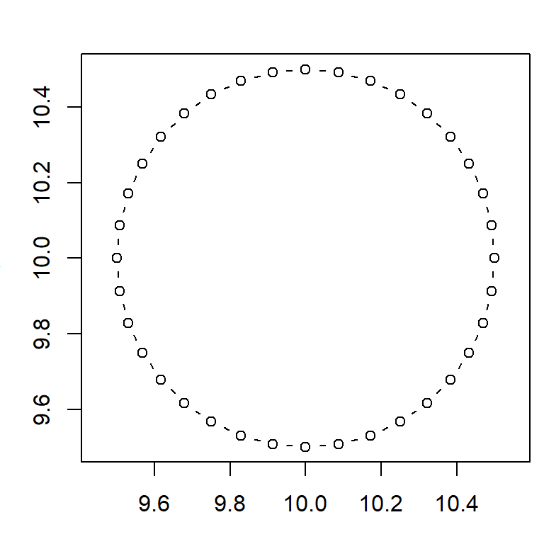
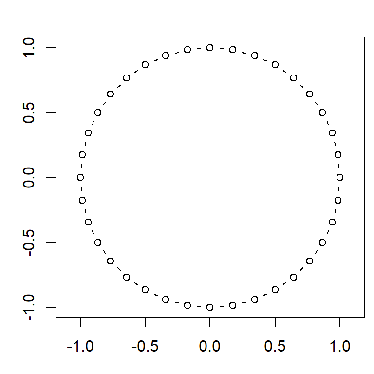

Spatial Data Analysis with R
BayGeo, Spring 2022
Custom Functions 
Custom Functions 
Functions help you:
Functions generally do one or two things:
You define a function like you define a variable:
myfun <- function() {
## code goes here
}A simple function that takes an action.
You call custom functions like any built-in function. Remember to add the ().
## [1] "Hello world!"Create a hello_world function that prints something to the console.
Call it.
Functions will return a value when:
## [1] 9.869604If you need to return multiple variables, or an unstructured object, put them in a list object and return the list.
Arguments add flexibility to your function, allowing you to use it in different places in your code. You define arguments in the function definition.
## [1] 25.4The code in your function should only depend on arguments passed to it, not other variables or packages which may or may not be available.
Arguments are passed as copies (as opposed to a pointer). This means if the function modifies the argument, it won’t change the argument in the calling environment.
Separate multiple arguments with commas.
circle_pts <- function(radius, ctr_x, ctr_y) {
theta <- seq(from=0, to=2*pi, by=pi/18)
xs <- ctr_x + radius * cos(theta)
ys <- ctr_y + radius * sin(theta)
return (cbind(xs, ys))
}
pts <- circle_pts(0.5, 10, 10)
head(pts)## xs ys
## [1,] 10.50000 10.00000
## [2,] 10.49240 10.08682
## [3,] 10.46985 10.17101
## [4,] 10.43301 10.25000
## [5,] 10.38302 10.32139
## [6,] 10.32139 10.38302
R will throw an error message if required arguments are not passed.
R doesn’t require you to declare a data type for arguments, so if you need to check data type you need to build that in your code. E.g.,
if (!inherits(x, "list")) stop("x should be a list")The way you make an argument optional is to give it a default value.
circle_pts <- function(radius, ctr_x=0, ctr_y=0) {
theta <- seq(from=0, to=2*pi, by=pi/18)
xs <- ctr_x + radius * cos(theta)
ys <- ctr_y + radius * sin(theta)
return (cbind(xs, ys))
}
pts <- circle_pts(1)
head(pts)## xs ys
## [1,] 1.0000000 0.0000000
## [2,] 0.9848078 0.1736482
## [3,] 0.9396926 0.3420201
## [4,] 0.8660254 0.5000000
## [5,] 0.7660444 0.6427876
## [6,] 0.6427876 0.7660444
Write a function that squares the log of the argument. Test if your function is vectorized.
[Solution]
Write a function that takes as its argument a sf object, and returns the area of the bounding box.